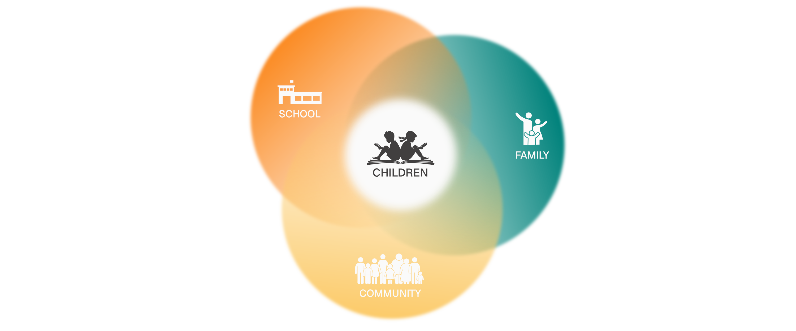

Bāl Shiksha Foundation works to support children from disadvantaged backgrounds so they are not left behind in their education. We believe that a child’s learning and wellbeing do not exist in isolation. Every child stands at the intersection of family, school, and community. When any one of these is fragile, a child’s education is at risk. Our work places children at the centre, while engaging with the families, schools, and communities that shape their everyday lives. By strengthening these interconnected systems, we aim to create conditions where children can learn with dignity, continuity, and hope.

Our Purpose.
To support underprivileged children in India through their entire educational journey from early schooling to higher education; by addressing financial, social, and systemic barriers that prevent them from continuing in education. We believe that every child deserves access to high-quality education and, through long-term financial assistance, we aim to help them realise their full potential and shape a brighter future for themselves and their communities.
Our Mission.
To enable access to quality education for children at risk of being left behind. To support children through financial assistance and holistic, context-aware support. To work closely with families, schools, and communities to strengthen the environments around children. And to build pathways that allow children to continue learning, grow in confidence, and expand their opportunities.
Basic education links the children, whether of cities or the villages, to all that is best and lasting in India.
Mahatma Gandhi
Our Values.
Empathy
We approach our work with care, humility, and attentiveness. We listen first, recognising that every child and family carries a unique story shaped by circumstance.
Dignity
We believe children and families deserve respect, not charity. Our work seeks to support without judgment and to preserve dignity at every stage.
Integrity
Responsibility, Transparency and Accountability for the children we support, the communities we work with, and those who place their trust in us.
Opportunity
We believe education should be a basic right, not a privilege. Our work focuses on creating real opportunities for children to learn, continue, and thrive.
What We Believe.
Origin
Many children in India face barriers such as poverty, migration, disability, family instability, or lack of institutional support. These challenges often disrupt schooling and make continuity fragile. We believe education is one of the most powerful tools for long-term change, and that through collective effort, we can help ensure children are not left behind.
The need we intend to serve
Children affected by poverty, instability, migration, family loss, disability or lack of support are often unable to stay in school. We want to ensure these children are not left behind. We believe that every child deserves the dignity of opportunity, Education is one of the most powerful tools for long-term change, and together, i.e. donors, communities, and supporters, we can open doors that would otherwise remain closed.
Our Ways of Working.
Bal Shiksha Foundation does not operate through rigid hierarchies or narrowly defined roles. While each partner has areas of focus, all members contribute across activities, from conversations and planning to field visits, problem-solving, and reflection. Bal Shiksha Foundation is built as a collaborative partnership. While each member contributes in specific ways, the Foundation works collectively; responsibilities overlap, conversations are shared, and decisions are shaped together. All members contribute across activities as needed, guided by context, capacity, and shared intent.
Will Major Founding Partner
Will brings the founding vision and long-term direction to Bal Shiksha Foundation. He plays a key role in bringing people together, building relationships, and mobilising support for the Foundation’s work. Will is actively involved in fundraising, outreach, and decision-making, while remaining closely connected to on-ground realities through regular field visits, connecting with the beneficiaries and continuous dialogue with the team.

Abi Major Founding Partner
Abi works alongside Will in shaping the Foundation’s direction and strengthening its outreach. She supports awareness-building, fundraising, and engagement efforts, and contributes to collective decision-making and long-term thinking. Abi remains actively involved in the Foundation’s evolving work and partnerships.
George Major Founding Partner
George supports the Foundation by helping translate its values and intent into meaningful relationships and long-term engagement. He contributes to outreach and fundraising efforts with a focus on building sustained support, reflective dialogue, and shared ownership of the Foundation’s work. George is closely involved in discussions around direction and growth, bringing a considered and people-centred perspective to how the Foundation evolves.
Sowmya Amin Operations & Coordination Partner
Sowmya supports the smooth functioning of the Foundation by coordinating internal processes, communication, and workflows. She takes care of documentation, scheduling, and coordination between programme, finance, and legal functions, ensuring clarity and continuity across the team. Alongside this, Sowmya also engages with the Foundation’s on-ground work, participating in field visits, supporting coordination with schools and partners, and contributing to discussions that shape programmes and responses. Her role bridges operational continuity with lived, on-ground realities.
Krunal Palande Community & Programmes Partner
Krunal works closest to the ground, engaging directly with schools, students, teachers, and local communities. He focuses on understanding the needs, challenges, and everyday realities of children and students, and translating these insights into meaningful actions for the Foundation. Krunal supports the design and implementation of programmes and interventions, works closely with local partners and vendors, and also contributes to the Foundation’s design, technology, and branding efforts.
Sandeep Deshmukh Community Partner
Sandeep supports the Foundation’s on-ground work through deep local knowledge, relationships, and trust within the region. He works closely with Krunal to understand the social, cultural, and economic contexts in which children and students grow up, helping surface their needs and challenges with sensitivity and accuracy. Sandeep plays an important role in connecting the Foundation with schools, families, and communities, and in shaping responses that are practical, rooted, and locally meaningful.
Sunil Badsilwal Legal & Financial Oversight
Sunil supports the Foundation with legal, compliance, and financial oversight. He ensures that statutory requirements are met and that financial processes remain transparent, accurate, and accountable, enabling the Foundation to function responsibly and sustainably.
Roney Rodrigues Storytelling & Outreach
Roney supports the Foundation’s communication and outreach by sharing stories from the field and strengthening its presence across social and digital platforms. Through thoughtful storytelling and engagement, he helps build awareness and create pathways for wider support to individuals and networks who may contribute time, resources, or funding to sustain the Foundation’s work.